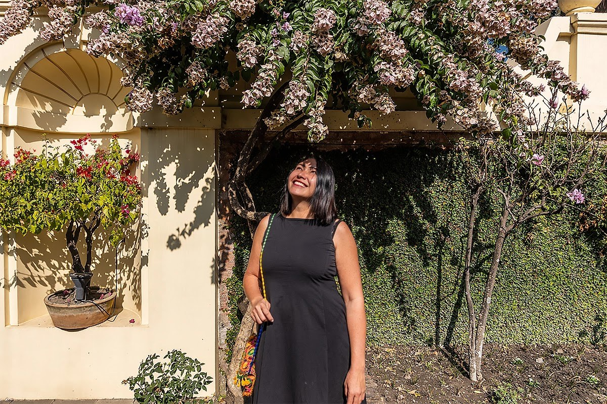
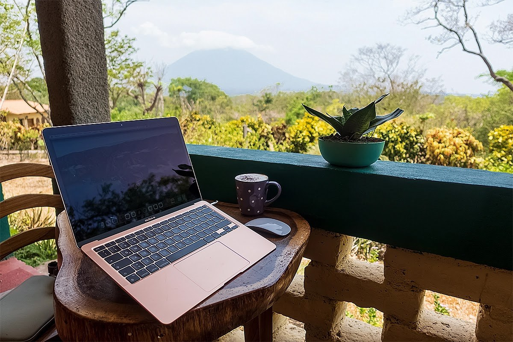
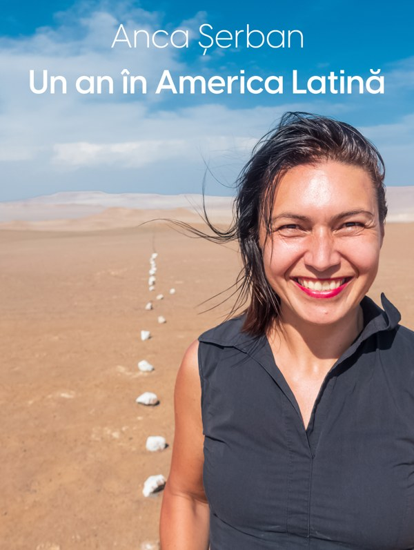
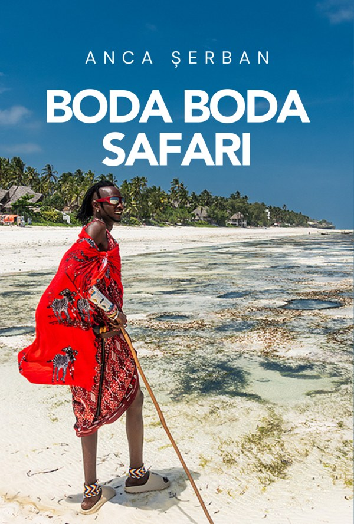

MARKETING · CĂLĂTORII · CĂRȚI · CURSURI
Fac marketing de oriunde și scriu despre drum
Sunt Anca Șerban și fac marketing pentru un startup B2B. Lucrez fully remote, cu o echipă din mai multe țări și cu AI acolo unde mă ajută să livrez bine și repede. Restul timpului îl petrec pe drum: 128 de țări și două cărți scrise despre ele.
Aici împart din experiența mea: cum folosesc cele mai noi instrumente pentru a genera lead-uri. Iar din decembrie, țin și sesiuni live pentru antreprenorii care vor să-și facă singuri marketingul.

CE FAC
Patru lucruri, un singur om

REMOTE WORK
Cum lucrez de pe drum
Cum țin un job full-time de pe drum: fusuri orare, internet, locuri de lucru prin lume.
Articole

CĂRȚI
Două cărți scrise
Un an prin America Latină, apoi Africa cu boda boda. Nu sunt ghiduri, ci oamenii și drumurile de acolo, cum le-am trăit.
CărțileSESIUNE LIVE ONLINE · VINERI, 4 DEC
AI pentru marketing, când nu ești de meserie
Fără teorie despre viitorul AI. Lucrezi pe afacerea ta, cu uneltele pe care le folosesc și eu la job, și pleci cu lucrurile făcute.
CE LUCRĂM ÎN CELE DOUĂ ORE
- CÂND
- Vineri, 4 dec, 19:00
- CÂT
- 2–2,5 ore, cu întrebări
- UNDE
- Online, pe Google Meet
- PREȚ
- 290 lei
După sesiune primești înregistrarea, prompturile și șabloanele.
DESPRE
Biroul meu încape într-un rucsac
Călătoresc din 2008, iar din 2020 lucrez fully remote: plec pentru luni întregi și mă întorc regulat acasă, în București. Am un laptop, un rucsac și un job de marketing pe care îl fac din cafenele și din Airbnb-uri, pe orice fus orar aș fi.
Aici adun tot ce fac: ce scriu despre remote work și marketing, cărțile, blogul de călătorii, interviurile și, de acum, cursuri pentru cine vrea să-și facă singur marketingul, fără să fie de meserie.
Povestea mai lungăDE PE BLOG
Ultimele articole

INTERVIURI
Am stat de vorbă despre drum și muncă
CONTACT
Scrie-mi direct
Pentru sesiuni, colaborări, interviuri sau o întrebare despre drum.